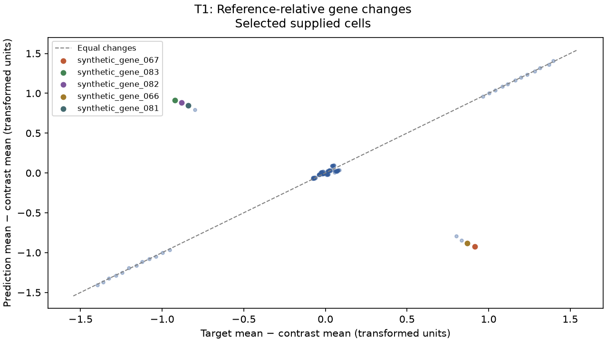
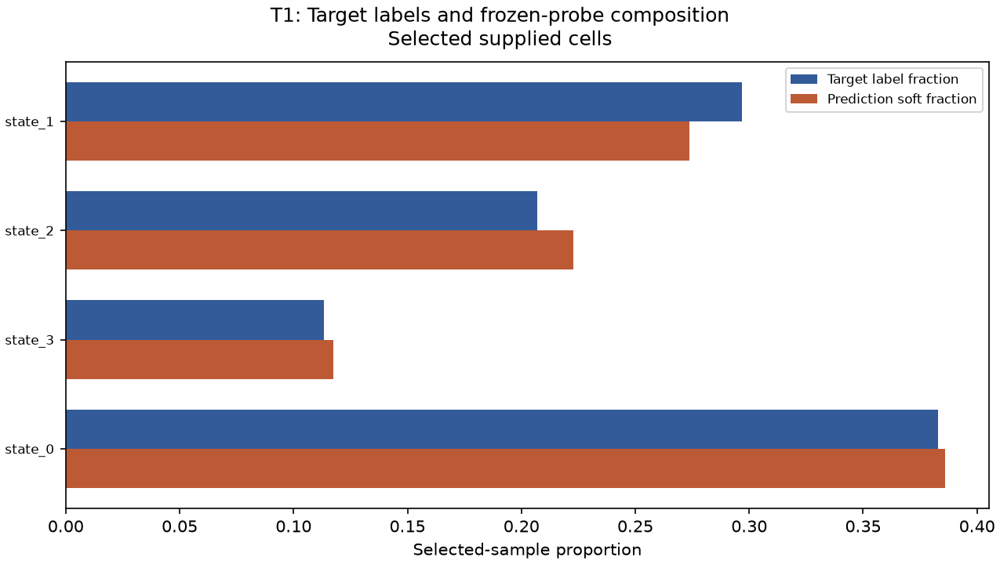
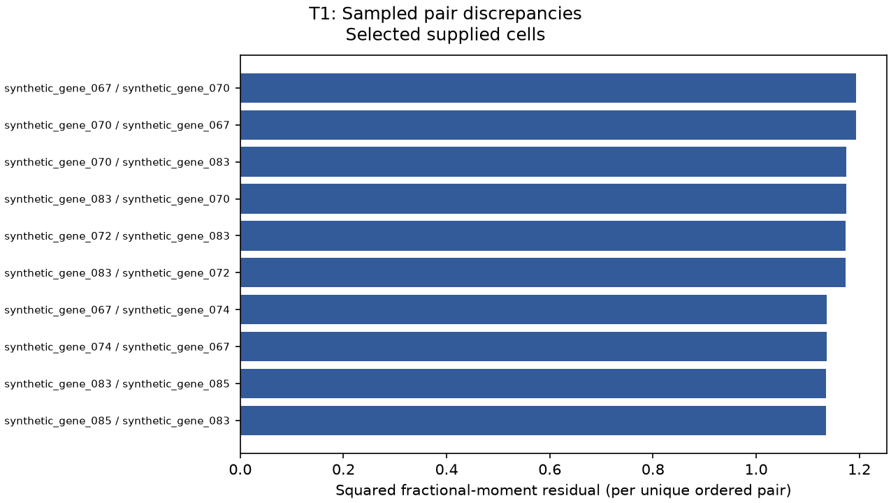

This report assesses a bounded selected subset and the supplied gene panel. Keep it private; it does not certify unscanned rows or hidden-target performance.
Diagnostic follow-up
thresholds exceeded
Coverage: listed rules evaluated. These heuristic conventions are not statistically calibrated, carry no guaranteed false-alarm rate or FDR, and do not establish biological health or model improvement.
Profile scorelens-diagnostic-conventions-v1; fixed domain ordering, at most six displayed findings. Unlike official scalar scales are never compared.
1. Meaningful literal response reversals
A selected supplied cells; 8 triggered row(s).
entity
measured value
comparator
threshold
units
synthetic_gene_067
-0.920843
opposite sign and absolute predicted delta >
0.25
supplied transformed expression
synthetic_gene_083
0.91332
opposite sign and absolute predicted delta >
0.25
supplied transformed expression
synthetic_gene_082
0.882759
opposite sign and absolute predicted delta >
0.25
supplied transformed expression
synthetic_gene_066
-0.881197
opposite sign and absolute predicted delta >
0.25
supplied transformed expression
synthetic_gene_081
0.844938
opposite sign and absolute predicted delta >
0.25
supplied transformed expression
Inspect named gene contrasts, input alignment, and normalization; operational target DE is not confirmed biological regulation.
2. Large selected-sample mean residuals
A selected supplied cells; 8 triggered row(s).
entity
measured value
comparator
threshold
units
synthetic_gene_067
1.83718
>
0.25
supplied transformed expression
synthetic_gene_083
1.83383
>
0.25
supplied transformed expression
synthetic_gene_082
1.76419
>
0.25
supplied transformed expression
synthetic_gene_066
1.74934
>
0.25
supplied transformed expression
synthetic_gene_081
1.68443
>
0.25
supplied transformed expression
Inspect named gene means, input alignment, normalization, and the supplied target/reference contrast.
Unassessed or unavailable follow-up rules
pair_priority: Sampled variogram and descriptive covariance remain evidence tables without an adopted priority threshold.
sensitivity_priority: Target-aware sensitivity is noncausal and does not determine follow-up priority.
Within listed thresholds means only that evaluated rules did not trigger. It is not a biological or full-file all-clear. Threshold calculations for every assessed row are in diagnostics.json.
Assessed scope
Independent deterministic selection preserves expression/coordinate row correspondence within each file; it does not establish paired cells across files.
input
original cells
selected cells
prediction
960
256
target
960
256
reference
960
256
Official scalar output — selected subset
These values are supplied unchanged by the pinned task v2 scorer. Different metrics have different scales and definitions; no weakest metric or combined priority score is inferred.
metric
value
de_score
0.7241
de_direction
0.6961
energy_distance
2.60042
mmd_u
0.04972
variogram
0.022532
pb_rel_err
0.0999
library_size_ratio
0.996
variance_ratio
1.008
composition_JSD
0.0006
pseudobulk_pearson
0.7663
_de_raw
0.75
_de_chance
0.0938
_de_chance_unif
0.25
_n_up
16
_n_dn
16
Gene follow-up A
Changes are mean transformed expression relative to the supplied reference (T1/T2) or matched WT (T3), not conventional fold changes. Operational DE calls, ranked slots, and literal signs remain separate. Target nonsignificance does not prove no biological response.
gene
change truth
change pred
absolute error
truth de direction
pred local de direction
official slot hit
synthetic_gene_067
0.916333
-0.920843
1.83718
up
down
False
synthetic_gene_083
-0.920506
0.91332
1.83383
down
up
False
synthetic_gene_082
-0.881429
0.882759
1.76419
down
up
False
synthetic_gene_066
0.86814
-0.881197
1.74934
up
down
False
synthetic_gene_081
-0.839495
0.844938
1.68443
down
up
False
synthetic_gene_065
0.833913
-0.843857
1.67777
up
down
False
synthetic_gene_064
0.801124
-0.793571
1.5947
up
down
False
synthetic_gene_080
-0.798293
0.795743
1.59404
down
up
False
synthetic_gene_028
0.0724888
0.0175042
0.0549846
none
none
False
synthetic_gene_027
0.087028
0.0350671
0.0519609
none
none
False
Local false-positive means a prediction-only significant signed call, including a reversal; it is not known false biology or an FDR estimate. Full rows are in gene_errors.csv.
Frozen-probe composition A
Prediction labels are ignored. Fractions use the selected target-fitted official probe; a low fraction does not establish biological absence.
celltype
target fraction
pred soft fraction
proportion error
jsd term
state_1
0.296875
0.273811
-0.0230636
0.000336274
state_2
0.207031
0.222815
0.0157833
0.000209074
state_3
0.113281
0.11745
0.00416911
2.71785e-05
state_0
0.382812
0.385924
0.0031113
4.54019e-06
Sampled pairs and descriptive covariance B / D
Ordered-pair occurrences and multiplicities are retained for variogram reconciliation. Fractional moments are not pure covariance; population ddof=0 covariance companion columns do not identify regulatory edges.
gene i
gene j
sampled occurrences
variogram squared error
covariance error
synthetic_gene_067
synthetic_gene_070
2
1.1933
-0.000587924
synthetic_gene_070
synthetic_gene_067
1
1.1933
-0.000587924
synthetic_gene_070
synthetic_gene_083
2
1.17452
-0.000182736
synthetic_gene_083
synthetic_gene_070
4
1.17452
-0.000182736
synthetic_gene_072
synthetic_gene_083
2
1.17367
0.00152802
synthetic_gene_083
synthetic_gene_072
3
1.17367
0.00152802
synthetic_gene_067
synthetic_gene_074
1
1.13729
4.88484e-05
synthetic_gene_074
synthetic_gene_067
2
1.13729
4.88484e-05
synthetic_gene_083
synthetic_gene_085
2
1.13492
0.00070423
synthetic_gene_085
synthetic_gene_083
1
1.13492
0.00070423
field
value
n_sampled_pairs
19836
n_unique_ordered_pairs
11434
total_possible_ordered_pairs
16256
unique_ordered_pair_coverage
0.703371
observed_gene_coverage
1
reconciliation_abs_error
6.59371e-10
Coverage is of ordered nonself pairs, not modules. Unsampled pairs have no diagnostic evidence; a small gene module may have no sampled within-module pair even when every gene appears somewhere.
Target-aware MMD sensitivity C
One clipped mean-shift intervention is selected and evaluated on the same target. It is noncausal and nonadditive, may worsen MMD, and is not a repair recommendation or expected training improvement.
Change = after − before; negative unbiased MMD values remain valid. Requested shifts, achieved shifts, and clipping are in diagnostics.json.
Task-specific evidence
T1 has no spatial or WT-response task section. Shared gene, composition, pair, and distribution diagnostics are shown above.
Measured local figures

A defined: Per-gene measured mean changes. Contrast is the supplied reference (T1/T2) or matched WT (T3). Named genes have the largest literal change residuals; these are not biological importance rankings.

A defined: Up to 12 classes with largest measured soft-fraction gaps. Prediction labels are ignored. A low predicted fraction is not biological absence; omitted classes remain explicit report warnings.

B defined: Largest measured unique ordered-pair residuals. Official reconciliation uses retained occurrence weights, not the displayed unweighted bar heights. Covariance remains separate descriptive evidence, not regulatory interaction.
Warnings and limitations
All scores and diagnostics apply to the selected supplied-cell subset; they do not certify unscanned original rows.
Biological states are assessed only through global gene errors and frozen-probe proportions; no state-conditional expression attribution is computed.
The target-informed matrix edit is noncausal sensitivity and may alter normalization.
Runtime FutureWarning: 'n_jobs' has no effect since 1.8 and will be removed in 1.10. You provided 'n_jobs=-1', please leave it unspecified.
Null values in this report mean undefined, not applicable, or non-finite input values; see each diagnostic definition and limitation for its reason.
A: direct/algebraic selected-sample evidence; B: sampled evidence; C: noncausal sensitivity; D: descriptive companion values. Undefined values are null, never implied zero. Selected-array memory limits do not bound whole-process memory. Repeated seed behavior is sampling evidence, not biological uncertainty.